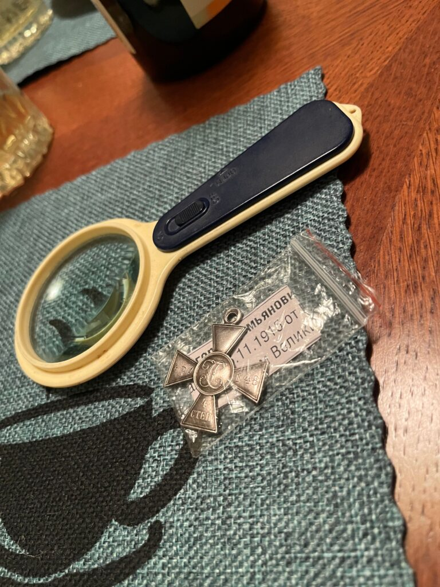
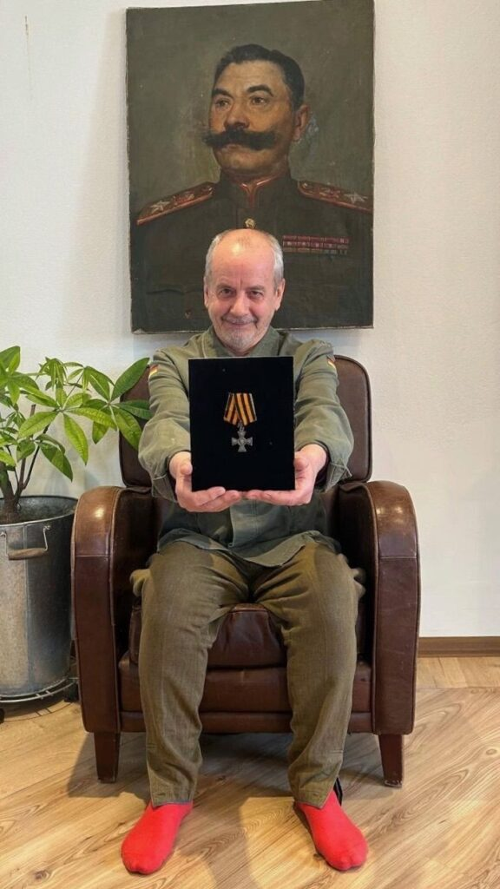
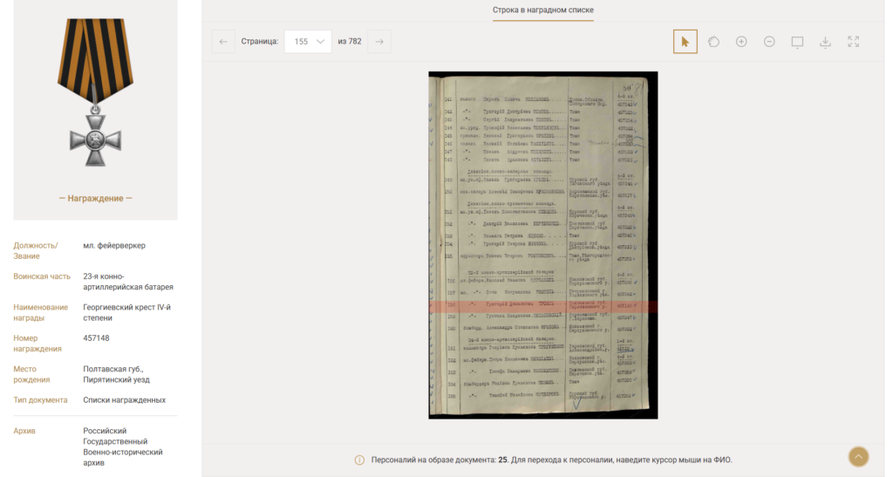
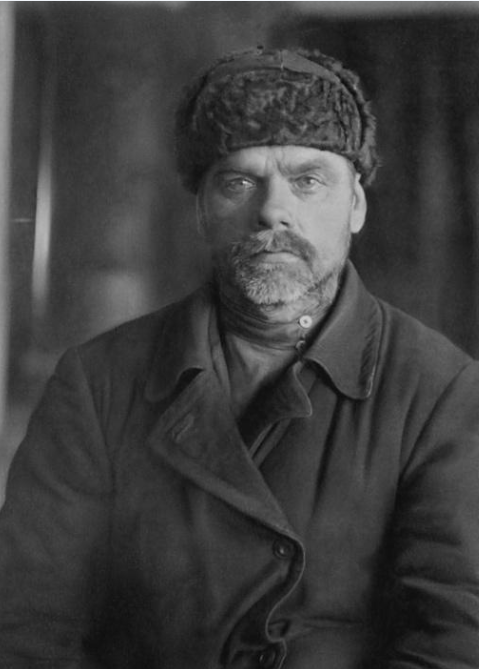

Gelöste Familienrätsel · 2025
Как я нашёл утраченную награду прадеда: Георгиевский крест
Собственный рассказ автора · Familio.Media · 6 июня 2025

Прадед Григорий Демьянович Троян в форме, с Георгиевским крестом на груди. На погонах скрещённые пушки, знак артиллерии: он служил младшим фейерверкером 23-й конно-артиллерийской батареи. Фото из архива семьи Харченко.
С детства я слышал от отца, Валерия Алексеевича, историю о потерянной награде прадеда: Георгиевский крест IV степени. В 1965 году, десятилетним мальчишкой, отец играл во дворе дома дяди в Новочеркасске и выронил крест из кармашка рубашки. Находка исчезла бесследно, и все пятьдесят лет, что существует семья, отец сокрушался об этой потере.
6 сентября 2023 года пришло письмо о совпадении с сервиса Familio: в оцифрованных «Списках участников Первой мировой войны» обнаружились архивные данные о награждении прадеда, Григория Демьяновича Трояна, младшего фейерверкера 23-й конно-артиллерийской батареи. Я увидел фотографию креста и его номер, 457148, и задумался: а вдруг его всё ещё можно найти?
Первые попытки результата не дали: казалось, крест исчез навсегда. Но 11 января 2025 года позвонил незнакомец: крест под номером 457148 нашёлся у коллекционера, специализирующегося на наградах за Праснышскую операцию. Через месяц я с женой Ксенией летал в Волгоград, чтобы забрать семейную реликвию.
О находке отцу решили не сообщать сразу: заказали для креста именной футляр из чёрного дерева с бронзовой табличкой, сняли исторический фильм о победе под деревней Нерадово в 1915 году, устроили в родной казачьей станице настоящую церемонию к юбилею отца в апреле 2025 года. «Сын, сегодня тебе прощаются все грехи», сказал отец, увидев крест.
Дальнейшие архивные поиски прояснили и боевой путь прадеда. Уже на второй день войны, 1 августа 1914 года, в боях под городом Кельцы он был ранен картечью в стопу. Оправившись, записался в добровольческий «список желающих вступить в части смерти». Летом 1915 года его 14-я кавалерийская дивизия сорвала попытку немецких войск окружить русскую армию под Нерадово: за этот бой Григорий Троян и получил свой Георгиевский крест. После революции прадед продолжал служить: в Государственном архиве Краснодарского края нашлось его личное дело с фотографией 1932 года.
Находку официально подтвердил Центр исследования культурных ценностей в Москве: экспертное заключение внесено в открытый реестр. Сейчас автор разыскивает потомков четырёх сослуживцев прадеда, награждённых тем же приказом: если у вас есть сведения, с ним можно связаться через Familio.
{kind=link}

Крест после передачи коллекционером. Фото из архива семьи Харченко.
{kind=link}

Валерий Алексеевич Харченко с врученным Георгиевским крестом деда. Фото из архива семьи Харченко.
{kind=link}

Запись о награждении Г.Д. Трояна. Портал «Памяти героев Великой войны», РГВИА.
{kind=link}

Григорий Демьянович Троян, 1932 год. Снимок из личного дела, ГАКК Ф.Р-774, Оп.1, Д.414.